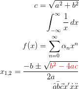
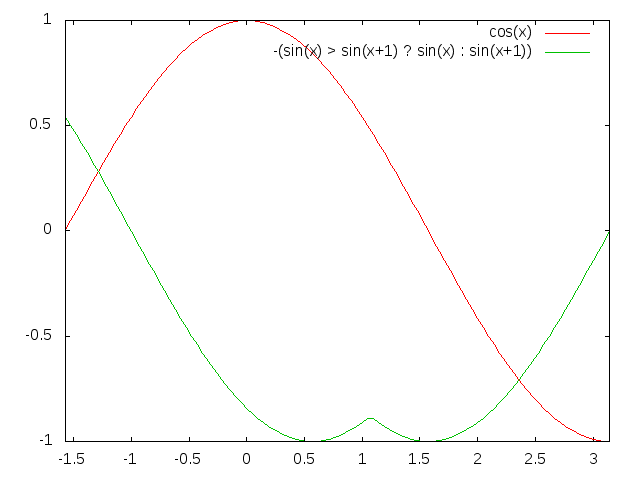
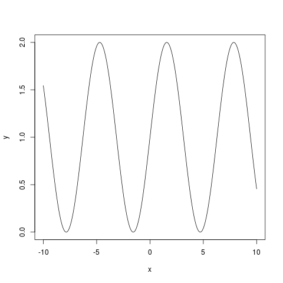
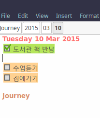

컴퓨터 공부에 있어 정보를 얻고 생산할 수 있는 최고의 도구는 웹과 위키 시스템이라고 생각한다. 웹은 이미 책, 강의, 과학 논문 거의 모든 정보 컨텐츠들을 웹에서 흡수하였고 서비스 중이다. 이를 더 전문적으로 활용한다면 연구에 많은 도움이 될 것이다.
월드 와이드 웹(World Wide Web, WWW, W3)은 인터넷에 연결된 컴퓨터들을 통해 사람들이 정보를 공유할 수 있는 전 세계적인 정보 공간을 말한다. 간단히 웹(Web)이라 부르는 경우가 많다. 이 용어는 인터넷과 동의어로 쓰이는 경우가 많으나 엄격히 말해 서로 다른 개념이다. - 위키백과, 월드 와이드 웹 [Link]
우리는 거의 모든 정보를 웹을 통해 얻는다. 모든 정보가 연결되어 있고, 검색 기능을 제공하기 때문이다. 우리가 웹에서 정보를 얻을 수 있는 것처럼 우리는 웹을 이용하여 정보를 나눌 수 있다.
웹은 정보를 얻는 것, 정보 서비스를 제공하는 것, 두 가지로 활용할 수 있다. 정보를 찾는 것은 검색엔진과 웹브라우저 활용 등을 통해 우리가 쉽게 할 수 있다. 이 부분에 있어 파이어폭으 웹브라우저를 추천한다.
파이어 폭스를 추천하는 이유
우선 웹페이를 만들거나 웹에있는 정보를 변경할 때, 기본적으로 세가지 언어를 학습해야 한다.
위의 내용들은 W3C(World Wide Web Consortium)에서 제공하는 w3school에서 학습할 수 있다. w3school [Link] 또한 샐활코딩의 웹수업을 추천한다. [Link]
웹페이지를 만들때 Braket이라는 에디터를 추천한다. Bracket [Link]
웹페이지를 만들었다면 host 저장소를 찾아 웹페이지를 호스팅 하기만 하면된다. Gibhub에서 무료로 웹페이지 호스팅 서비스를 제공한다. Github pages [Link]
더 나아가 웹서버를 운영을 위해선 서버측에서 동작하는 언어인 PHP, Java, Node.js 등을 선택적으로 익혀야 하며 서버를 장만해 운영해야 한다.
정보를 나누는 도구 중에 여러 가지가 있겠지만, 그 중 강력한 도구 중 하나는 위키 시스템이다. 위키 시스템을 연구에 활용한다면 자료의 정리, 검색, 공유에 도움이 될 것이다.
위키는 웹 브라우저를 이용, 간단한 마크업 언어를 통해 쉽게 내용을 추가하고, 고치고 삭제할 수 있는 웹사이트를 말한다. 위키 소프트웨어를 이용하며, 협업을 통해 운영된다.
위키 창안자 : Ward Cunningham [wik]
사이트를 방문한 누구나 위키 웹사이트 내의 문서를 고치거나 새로 만들 수 있다. 이를 위해 기본적인 웹브라우저만 있으면 되며, 추가적인 확장 기능을 요구하지 않는다.
연결된 문서가 존재하는지에 상관없이 다른 문서 사이를 쉽고 직관적으로 링크할 수 있어, 관련된 주제의 연결을 돕는다. 위키는 가벼운 방문자를 위해 잘 만들어진 사이트는 아니다. 하지만, 지속적으로 웹사이트의 풍경을 변화시켜 방문자가 그 변화와 협력의 지속적인 과정에 참여하도록 한다.
위키의 가장 핵심은 다음과 같다.
본인은 위키문법은 따로 학습할 필요가 없다고 생각한다. 왜냐하면 대부분 위키문서를 편집할 때 위키전용 편집기를 쓰기 때문에 따로 문법을 외워서 쓸필요가 없으며 편집기에서 제공하는 기능을 통해 문서를 작성하면 된다.
위키 문법을 참고하고 싶다면 아래의 링크에서 확인할 수 있다.
위키 시스템은 기본적으로 웹에서 누구나 편집할 수 있게 하기 위한 시스템이지만 위키 시스템의 구조와 동작 방법을 활용하여 개인이 정리 편집 할 수 있게끔 만들어진 개인 위키 시스템도 존재한다.
DokuWiki : [Link]
Zim : [Link]
연구자는 연구노트를 사용한다. 여러 가지 도구가 있을 것이다. 논문을 관리하는 Zotero, Mendeley 또한 연구노트로 사용할 수 있다. 본인은 현재 zim을 연구노트로 활용하고 있다. OneNote와 Evernote, Zotero를 사용해 왔지만, zim은 앞에서 언급한 노트에서는 제공하지 않는 공학도에게 필요한 플러그인들이 매우 많다. 또한 wiki 문법으로 되어 있고 ASCII 기본 텍스트 형식에 폴더 파일시스템으로 정리되어 있어서 zim 이외에 다른 위키 시스템으로 쉽게 이식할 수 있다. 오픈소스여서 자신이 능력만 된다면 Python으로 여러 기능을 추가해서 사용할 수 있다.
Linux (Ubuntu)
sudo apt-add-repository ppa:jaap.karssenberg/zim sudo apt-get update sudo apt-get install zim
Window
Zim Desktop Wiki for Window [Link]
zim의 메뉴바에서 Help 에서 모든 사용법을 익힐 수 있다.
기본적인 노트 사용법은 여러 다른 편집기와 동일한 인터페이스를 제공한다. 메뉴바에서 Format에 문서를 편집할 수 있는 기능이 있다.
또한, 이미지 파일이나 링크 등을 첨부할 수 있다.
Image... 를 통해 이미지를 삽입하며, Link를 통해 웹페이지 혹은 파일 및 경로를 삽입할 수 있다. 다른 여러가지 Insert 기능들은 플러그인을 통해 활성화되면 사용할 수 있다.
노트에 관련된 도구들은 메뉴바에서 File에 해당된다.
링크를 통해 하위노트를 생성할 수도 있다.
Insert Link 창이 나타나면 Link to와 Text에 노트 이름을 적고 Link를 클릭하면 링크를 통해 노트가 생성된다. 또한 링크 앞에 "+"를 추가하면 하위노트로 만들 수 있다.
여러 노트들 간에 이동을 통해 정보를 빠르게 얻고 편집할 수 있다. 노트 이동에 관한 도구들은 메뉴바에 Go에 해당한다.
검색을 통해 단어 혹은 문장을 찾는다. 검색에 관한 도구들은 메뉴바에 Search에 해당한다.
Find, Find Next, Find Previous는 페이지 안에서 검색에 사용된다.
Replace는 페이지 안에서 단어 및 문장을 바꾼다.
Search...는 전체 노트 검색이다.
Seach는 BackLinks Pane 플러그인의 활성화가 필요하며 해당노트로 들어온느 링크가 있는 노트목록을 보여준다.
Recent Changes는 최근에 수정된 노트의 목록을 보여준다.
플러그인들은 의존적인 프로그램을 따로 설치해줘야 하는데 Edit > Preferences > Plugins 에서 확인할 수 있다. 기본적인 기능은 Window에서도 잘 동작한다. 하지만 몇몇 플러그인들은 Linux 환경에 맞추어진 것이 있어서 사용이 어렵다. 공식적인 플러그인은 27개지만 그 중 중요한 플러그인 5가지를 살펴본다.
latex, dvipng 두개의 프로그램 설치가 필요하며 다음의 명령어로 설치가능하다.
sudo apt-get install texlive texlive-base texlive-fonts-recommended texlive-fonts-extra texlive-science texworks dvipng
사용방법은 다음과 같다.
Insert Equation 창이 열리면 LaTeX 문법의 수식을 입력한 수 OK를 클릭한다.
LaTeX 수식 입력 문법은 위키백과 LaTeX/Mathmatics [Link]에서 화인할 수 있다.

그래프는 GnuPlot과 GNU R Plot 두가지를 이용할 수 있다. 각각 설치한 상태에서 사용이 가능하며 아래의 명령어로 설치 가능하다.
GnuPlot
GnuPlot은 GNU 프로젝트 중 하나로 스크립트 명령어로 그래프를 그릴 수 있게 해준다. [Link]
Linux에 설치
sudo add-apt-repository ppa:gladky-anton/gnuplot sudo apt-get update sudo apt-get install gnuplot
Window에 설치
Gnuplot window ver. download [Link]
사용방법
Insert Gnuplot 창이 열리면 원하는 그래프 소스를 입력하고 OK를 클릭한다.

Gnu R Plot
Gnu R Plot 은 R 프로그래밍 언어가 설치되어 있으면 R 패키지 중에 그래프 그리는 패키지를 사용하여 Zim 상에서 그래프를 그릴 수 있게 해준다.
Linux에 설치
sudo apt-get install r-base r-base-dev r-recommended
WIndow에 설치
R 공식 홈페이지에서 다운로드 [Link]
사용방법
Insert GNU R Plot 창이 열리면 원하는 그래프 소스를 입력하고 OK를 클릭한다.

스케줄 관리를 위해선 Journal 플러그인이 활성화 되어야 한다. Journal 플러그인은 의존적인 프로그램이 없다.
메뉴바에서 Go > Today [Alt+d] 를 클릭하면 오늘 날짜의 일지로 간다. Journal 하위 노트에서 노트 이동기능을 이용해 왔다갔다 하며 연, 월, 일 단위로 스케줄을 관리할 수 있다. 또한 bracket ["[]", space] 으로 할일을 관리할 수있다.

프로그래밍 언어 예제나, 중요한 Method 등을 정의할 때 언어 Syntax Color 기능을 제공한다.
Source View 플러그인에 의존적이며 gtksourceview2를 설치하여야 한다. 리눅스 민트에 기본으로 설치되어 있다.
Insert Code Block 창이 열리면 Syntax에 원하는 언어를 선택하고 소스를 작성하면 Syntax Color가 적용된다.
C
#include
/* function declaration */
void func(void);
static int count = 5; /* global variable */
main(){
while(count--)
{
func();
}
return 0;
}
/* function definition */
void func( void ){
static int i = 5; /* local static variable */
i++;
printf("i is %d and count is %d\n", i, count);
}
Java
package useworld.hydraulics.basic;
import useworld.tool.BasicCast;
import useworld.tool.BasicNumeric;
import useworld.tool.BasicUnit;
/**
* @author kiwon
* @author kiwon@null.net
*/
public class BasicMeteorology {
public static void main(String[] args) {
// 이슬점 계산.
BasicMeteorology obj = new BasicMeteorology();
double tDry = 25; // 건구온도(일반온도)
double tWet = 17; // 습구온도
double eS = obj.satVapPresMilibar(tDry); // 건구온도에서의 포화증기압.
double eW = obj.satVapPresMilibar(tWet); // 습구온도에서의 포화증기압.
double e = obj.watVapPre(tDry, tWet, eW, (byte) 1); // 실제 증기압 계산.
double rHum = obj.rHum(e, eS); // 상대습도 계산.
double dewTem = obj.dewTem(tDry, rHum); // 이슬점.
}
}